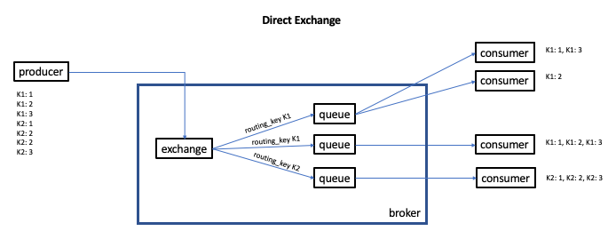

RabbitMQ - Exchanges
- In RabbitMQ, a producer cannot send a message directly to a queue.
- Instead, producers send messages to an exchange.
- The exchange determines if the messages is written to one queue, multiple queues, or discarded.
- Queues can be bound to multiple exchanges
- Exchange Name
- Durability (durable or transient) - whether or not the exchange survives a broker restart
- Auto-delete - whether or not the exchange is deleted with the last queue is unbound from it
- Optional Arguments - used by plugins and broker-specific features
Direct Exchange

- A direct exchange delivers messages to queues based on the message routing key
- A queue binds to the exchange with a binding key
- When a mesage with routing key K arrives at a direct exchange, the exchange routes the message to all bound queues with a matching binding key
- Direct exchanges are typically used to distribute a task to multiple workers in a round robin fashion
- Implicit here is that if multiple consumers are attached to a given queue, each messages will be delivered to a single consumer in a round robin fashion
The Default Exchange ("")
- The default (or nameless) exchange is a direct exchange predefined by the broker and is identified by the empty string (
"") - Every queue is automatically bound to the Default Exchange with a routing key equal to the queue name
- In other words, messages directed to the default exchange are routed to the queue with the name of the specified
routing_key- if it exists
Topic Exchange
- Typically used for publish/subscribe
- Topic Exchanges route messages to one or many queues based on matching between a message routing key and the pattern that was used to bind a queue to the exchange
- Messages sent to a topic exchange have a routing key which is a list of words, delimited by dots.
E.g.
stock.usd.nyse.ibm - The routing logic of a topic exchange is similar to the routing logic of a direct exchange. I.e. a message with a given routing key will be delivered to all queues that are bound with a matching binding key
- However, a topic exchange also supports the following wildcards:
*matches exactly one word#matches zero or more words
Fanout Exchange
- A Fanout Exchange ignores the routing key and routes each message to all queues that are bound to it
- If a new messages is published to a fanout exchange with N bound queues, a copy of the message will be delivered to all N queues
Headers Exchange
- A Headers Exchange is designed for routing on multiple attributes which are more easily expressed as message headers than a routing key.
- Headers Exchanges ignore the routing key attribute
- Instead, the attributes used for routing are taken from the headers attribute
- A message is considered matching if the value of the header equals the value specified upon binding